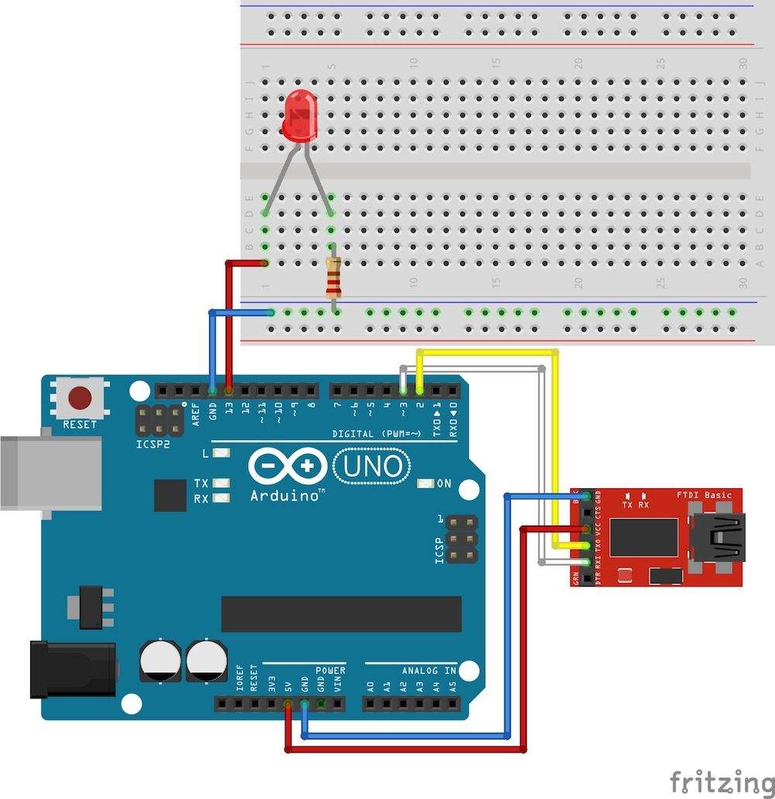

AndroidからLED制御
最後に、ボタンによりLEDの点灯、消灯を制御してみましょう。
USBシリアルアダプタは変更せず、LEDを点灯させる回路の追加になります。
LEDはプラスマイナスがありますので注意して下さい。
13番ピン側(下の図で左側)に、LEDの足の長い方を接続します。
次にスケッチを入力します。
先ほどのスケッチに青で記述した箇所を追加します。
Arduino側の設定
Arduino UNO
回路 (Arduino Uno)

スケッチ (Arduino Uno)
1
2
3
4
5
6
7
8
9
10
11
12
13
14
15
16
17
18
19
20
21
22
23
24
25
26
27
28
29
30
31
32
33
34
35
36
37
38
39
40
41
42
43
44
45
46 | #include <SoftwareSerial.h>
//androidで使用するピンを指定
SoftwareSerial android(2,3);
int led = 13;
char get_serial = 0;
void setup(){
//android用のシリアルのポートを設定
android.begin(9600);
// arduinoのシリアルモニタ用
Serial.begin(19200);
pinMode(led,OUTPUT); // ledピンを出力用に設定
Serial.write("init");
}
void loop(){
if(android.available()){
get_serial = android.read();
Serial.write(get_serial);
if(get_serial == '1'){
digitalWrite(led,HIGH); //led点灯
} else {
digitalWrite(led,LOW); //led消灯
}
}
if(Serial.available()){
android.write(Serial.read());
}
}```
### Arduino Mega
#### 回路 (Arduino Mega)

#### スケッチ (Arduino Mega)
|
include
int led = 13;
char get_serial = 0;
void setup(){
//android用のシリアルのポートを設定
android.begin(9600);
// arduinoのシリアルモニタ用
Serial.begin(19200);
pinMode(led,OUTPUT); // ledピンを出力用に設定
Serial.write("init");
}
void loop(){
if(Serial1.available()){
get_serial = Serial1.read();
| Serial.write(get_serial);
if(get_serial == '1'){
digitalWrite(led,HIGH); //led点灯
} else {
digitalWrite(led,LOW); //led消灯
}
|
}
if(Serial.available()){
android.write(Serial.read());
}
}
| ## Android側の設定
今回は「MainActivity.java」と「main_activity.xml」を修正します。
#### MainActivity.java
|
package gclue.com.myusbhost;
import android.content.BroadcastReceiver;
import android.content.Context;
import android.content.Intent;
import android.hardware.usb.UsbManager;
import android.os.Bundle;
import android.os.Handler;
import android.os.Message;
import android.support.v7.app.ActionBarActivity;
import android.util.Log;
import android.view.Menu;
import android.view.MenuItem;
import android.view.View;
import android.widget.Button;
import android.widget.TextView;
import android.widget.Toast;
import com.ftdi.j2xx.D2xxManager;
import com.ftdi.j2xx.FT_Device;
public class MainActivity extends ActionBarActivity {
1
2
3
4
5
6
7
8
9
10
11
12
13
14
15
16
17
18
19
20
21
22
23
24
25
26
27
28
29
30
31
32
33
34
35
36
37
38
39
40
41
42
43
44
45
46
47
48
49
50
51
52
53
54
55
56
57
58
59
60
61
62
63
64
65
66
67
68
69
70
71
72
73
74
75
76
77
78
79
80
81
82
83
84
85
86
87
88
89
90
91
92
93
94
95
96
97
98
99
100
101
102
103
104
105
106
107
108
109
110
111
112
113
114
115
116
117
118
119
120
121
122
123
124
125
126
127
128
129
130
131
132
133
134
135
136
137
138
139
140
141
142
143
144
145
146
147
148
149
150
151
152
153
154
155
156
157
158
159
160
161
162
163
164
165
166
167
168
169
170
171
172
173
174
175
176
177
178
179
180
181
182
183
184
185
186
187
188
189
190
191
192
193
194
195
196
197
198
199
200 | private FT_Device ftDev = null;
private static Context mContext;
private D2xxManager ftdid2xx;
private static final String TAG = "USB";
private boolean isReading = false;
private ReadThread mReadThread;
private int iavailable = 0;
private static final int readLength = 512;
byte[] readData;
char[] readDataToText;
private TextView mInputValue;
private Button mLedOnButton; // ONボタン
private Button mLedOffButton; // OFFボタン
@Override
protected void onCreate(Bundle savedInstanceState) {
super.onCreate(savedInstanceState);
setContentView(R.layout.activity_main);
try {
ftdid2xx = D2xxManager.getInstance(this);
} catch (D2xxManager.D2xxException ex) {
Log.e(TAG,ex.toString());
}
mContext = this.getBaseContext();
openUsb();
mInputValue = (TextView)findViewById(R.id.inputValue);
// ボタンが押されたらUSBに値を送り込む(LED ON)
mLedOnButton = (Button)findViewById(R.id.ledOnButton);
mLedOnButton.setOnClickListener(new View.OnClickListener() {
@Override
public void onClick(View v) {
SendMessage("1");
}
});
// ボタンが押されたらUSBに値を送り込む(LED OFF)
mLedOffButton = (Button)findViewById(R.id.ledOffButton);
mLedOffButton.setOnClickListener(new View.OnClickListener() {
@Override
public void onClick(View v) {
SendMessage("0");
}
});
}
public void openUsb(){
int devCount = 0;
devCount = ftdid2xx.createDeviceInfoList(this);
if (devCount <= 0)
{
Toast.makeText(this, "デバイスが発見できません。" + Integer.toString(devCount), Toast.LENGTH_LONG).show();
Log.i(TAG,"デバイスが発見できましせんでした。");
return;
}
else{
Toast.makeText(this, "" + devCount + "個のデバイスを発見しました。", Toast.LENGTH_LONG).show();
Log.i(TAG,"" + devCount + "個のデバイスを発見しました。");
}
if(null == ftDev)
{
ftDev = ftdid2xx.openByIndex(mContext, 0);
}
else
{
synchronized(ftDev)
{
ftDev = ftdid2xx.openByIndex(mContext, 0);
}
}
//ftDev.setBitMode((byte) 0, D2xxManager.FT_BITMODE_RESET);
ftDev.setBaudRate(9600);
ftDev.setDataCharacteristics(D2xxManager.FT_DATA_BITS_8, D2xxManager.FT_STOP_BITS_1, D2xxManager.FT_PARITY_NONE);
ftDev.setFlowControl(D2xxManager.FT_FLOW_NONE, (byte) 0x0b, (byte) 0x0d);
ftDev.purge((byte) (D2xxManager.FT_PURGE_TX | D2xxManager.FT_PURGE_RX));
ftDev.restartInTask();
readData = new byte[readLength];
readDataToText = new char[readLength];
mReadThread = new ReadThread(mHandler);
mReadThread.start();
isReading = true;
}
@Override
public boolean onCreateOptionsMenu(Menu menu) {
// Inflate the menu; this adds items to the action bar if it is present.
getMenuInflater().inflate(R.menu.menu_main, menu);
return true;
}
@Override
public boolean onOptionsItemSelected(MenuItem item) {
// Handle action bar item clicks here. The action bar will
// automatically handle clicks on the Home/Up button, so long
// as you specify a parent activity in AndroidManifest.xml.
int id = item.getItemId();
//noinspection SimplifiableIfStatement
if (id == R.id.action_settings) {
return true;
}
return super.onOptionsItemSelected(item);
}
public void SendMessage(String msg) {
if(ftDev == null){
return;
}
synchronized (ftDev) {
if (ftDev.isOpen() == false) {
Log.e("j2xx", "SendMessage: device not open");
return;
}
ftDev.setLatencyTimer((byte) 16);
if (msg != null) {
byte[] OutData = msg.getBytes();
ftDev.write(OutData, msg.length());
}
}
}
private class ReadThread extends Thread
{
Handler mHandler;
ReadThread(Handler h){
mHandler = h;
this.setPriority(Thread.MIN_PRIORITY);
}
@Override
public void run()
{
int i;
while(true == isReading)
{
try {
Thread.sleep(50);
} catch (InterruptedException e) {
}
synchronized(ftDev)
{
iavailable = ftDev.getQueueStatus();
if (iavailable > 0) {
if(iavailable > readLength){
iavailable = readLength;
}
ftDev.read(readData, iavailable);
String mData = new String(readData);
Message msg = mHandler.obtainMessage();
msg.obj = mData;
mHandler.sendMessage(msg);
}
}
}
}
}
/**
* 描画処理はHandlerでおこなう
*/
Handler mHandler = new Handler() {
@Override
public void handleMessage(Message msg) {
String mData = (String)msg.obj;
mInputValue.setText(mData);
}
};
BroadcastReceiver mUsbReceiver = new BroadcastReceiver() {
public void onReceive(Context context, Intent intent) {
String action = intent.getAction();
if (UsbManager.ACTION_USB_DEVICE_ATTACHED.equals(action)) {
// never come here(when attached, go to onNewIntent)
openUsb();
} else if (UsbManager.ACTION_USB_DEVICE_DETACHED.equals(action)) {
if(ftDev != null) {
ftDev.close();
isReading = false;
}
}
}
};
|
}
1
2
3
4
5
6
7
8
9
10
11
12
13
14
15
16 | <TextView
android:id="@+id/inputValue"
android:layout_width="fill_parent"
android:layout_height="wrap_content"/>
<Button android:id="@+id/ledOnButton"
android:layout_width="wrap_content"
android:layout_height="wrap_content"
android:text="ON"
android:layout_gravity="center_horizontal" />
<Button android:id="@+id/ledOffButton"
android:layout_width="wrap_content"
android:layout_height="wrap_content"
android:text="OFF"
android:layout_gravity="center_horizontal" />
|
```
PCとAndroid端末を接続してプログラム実行し、Android端末側に実行ファイルを作成します。
今回もArduino側はシリアルモニタを表示した状態で待機します。
Android側の「ON」ボタンをタップします。
LEDが点灯しました。
OFFを押して消えることを確認してみましょう。